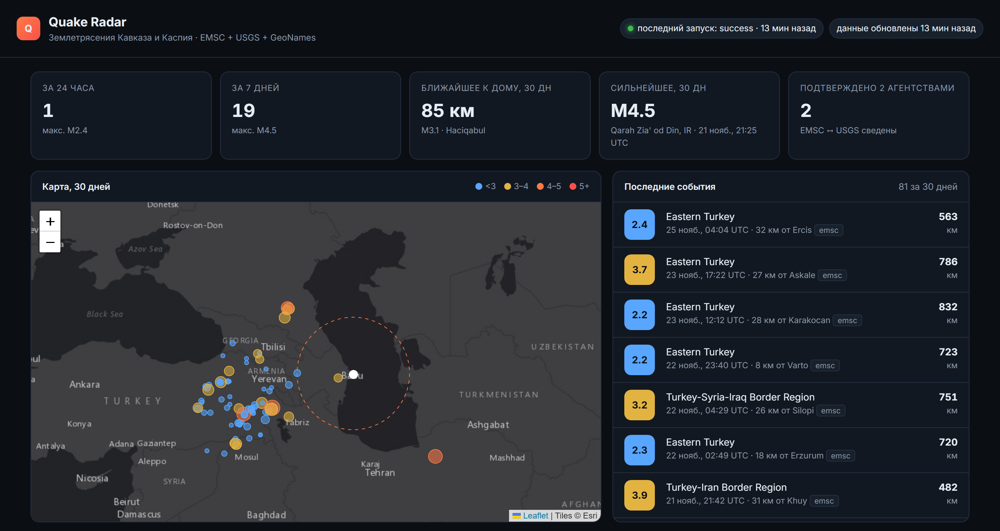
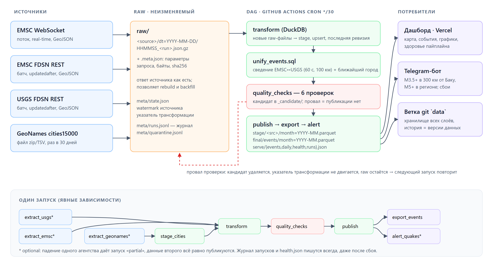
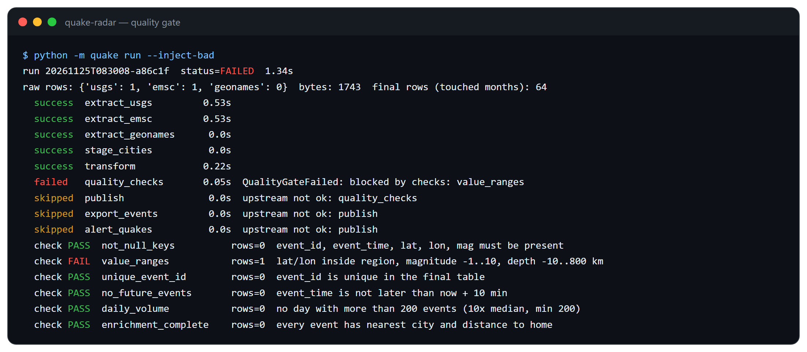
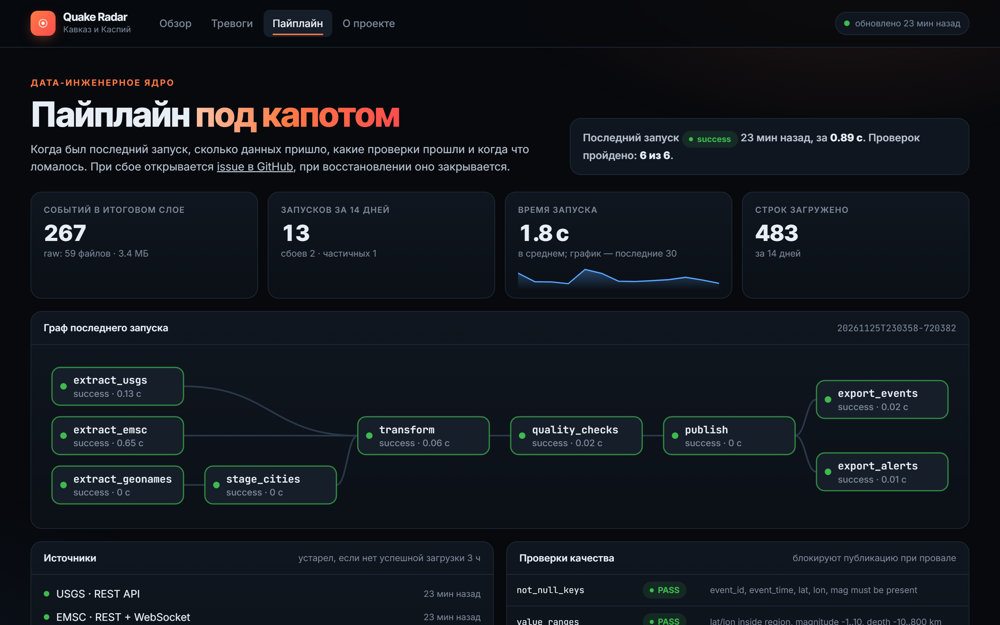
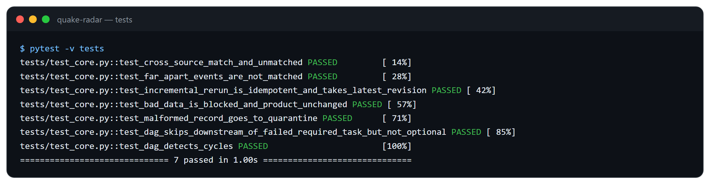

Пользователь: семья и друзья в Баку. После ощутимого толчка они ищут ответ в общем чате и в новостях.
Нужна одна проверенная запись о каждом землетрясении региона: с расстоянием до дома и ближайшим городом, без дублей из разных агентств, плюс уведомление о заметных толчках рядом с Баку.

Карта за 30 дней с радиусом 300 км вокруг Баку, лента событий с расстоянием до дома, график по дням, здоровье пайплайна.
M3.5+ в 300 км от Баку или M5+ в регионе. Отдельно бот пишет о сбоях и восстановлении пайплайна.
Без дата-инженерного ядра продукта нет: без сведения источников и проверок дашборд показывал бы дубли и мусор.
GeoJSON, updatedafter
каждые 30 мин · 1–3 КБ
регион с M2
JSON create/update
real-time · микробатч 60 с
сервис в Docker
GeoJSON, updatedafter
каждые 30 мин · ~1 КБ
reviewed-решения, M4+
cities15000.zip, TSV
раз в 30 дней · 3,3 МБ
863 города региона
// USGS · raw/usgs/dt=2026-11-25/…json.gz {"id": "us6000ucp5", "mag": 4.5, "magType": "mb", "time": 1795296354969, "status": "reviewed", "coordinates": [44.76, 38.77, 10]}
// EMSC · raw/emsc/dt=2026-11-25/…json.gz {"unid": "20261125_0000062", "time": "2026-11-25T04:04:55Z", "mag": 2.4, "magtype": "ml", "lat": 38.82, "lon": 43.62, "flynn_region": "EASTERN TURKEY"}
# GeoNames · cities15000.txt (TSV) 587084 Baku … lat 40.37767 lon 49.89201 country AZ population 2351300

| Слой | Формат и путь | Правило |
|---|---|---|
| raw | raw/<src>/dt=…/HHMMSS_run.json.gz+ .meta.json (sha256, параметры) | как есть, никогда не меняется |
| stage | stage/<src>/month=YYYY-MM.parquet | типы, одна строка на событие источника |
| final | final/events/month=YYYY-MM.parquet | одно землетрясение — одна строка |
| serve | serve/*.json | для дашборда |
| meta | state.json · runs.jsonl · quarantine.jsonl | указатели и журнал |
event_id PK · event_time · lat · lon · depth_km
mag · mag_type · place · event_type
sources (emsc · usgs · emsc+usgs)
preferred_source · emsc_id · usgs_id
mag_emsc · mag_usgs · updated_at
nearest_city · country_code
nearest_city_km · dist_home_km
Хранилище — ветка git data: файлы с понятной структурой, история коммитов = версии данных.
Watermark источника — максимальное updated из ответа. Следующий запрос: updatedafter = watermark − 6 ч. Перекрытие нужно, потому что агентства уточняют магнитуду задним числом.
Указатель трансформации — последний обработанный raw-файл. Двигается только после успешной публикации.
Upsert в stage: из повторов остаётся последняя ревизия; final пересчитывается только для затронутых месяцев.
-- stage: последняя ревизия события SELECT * FROM part QUALIFY row_number() OVER ( PARTITION BY source_event_id ORDER BY updated_at DESC, loaded_at DESC ) = 1
Проверено: повторный запуск и повторный backfill за 87 дней дали те же 266 событий, дублей 0. Сценарий покрыт тестом.
Backfill: та же DAG с явным окном по 30 дней
quake backfill --start 2026-08-01 --end 2026-10-26
Δt + км/10| Событие | EMSC | USGS | Итог |
|---|---|---|---|
| Дивичи, 14.08 | M4.9 | M4.9 | M4.9 · 122 км |
| Мамрух, 01.10 | M4.2 | M4.5 | M4.5 · 292 км |
| Гагатли, 16.09 | M3.8 | M4.1 | M4.1 · 393 км |
| Шамахы, 01.09 | M3.9 | M4.0 | M4.0 · 113 км |
Сведены 7 из 7 событий USGS, средняя разница магнитуд 0,13.
| Проверка | Правило |
|---|---|
| not_null_keys | id, время, координаты, магнитуда |
| value_ranges | в регионе, M от −1 до 10, глубина до 800 км |
| unique_event_id | одна строка на событие |
| no_future_events | не позже now + 10 мин |
| daily_volume | ≤ max(200, 10 × медиана) в день |
| enrichment_complete | у каждого события есть город |

Трансформация пишет в _candidate/. Демо --inject-bad: запись mag=42, lat=999 поймана, задачи publish, export и alert skipped, пользователь ничего не увидел. Битые записи без id уходят в карантин.

runs.jsonl: статус и время каждой задачи, строки и байты, проверки, ошибкиhealth.json пишется даже после сбояИзвлечение — optional-задача. Запуск получает статус partial, данные EMSC публикуются, watermark USGS стоит. Следующий запуск сам догружает пропущенное окно.
Кандидат удаляется, указатель трансформации не двигается, raw остаётся. После исправления следующий запуск обработает те же файлы.
Пропавшие поля ловит not_null_keys, битые записи уходят в карантин. После правки парсера quake rebuild пересобирает stage и final из raw.
Ещё: повторы HTTP с экспоненциальной паузой · атомарная запись состояния (os.replace) · concurrency в workflow не даёт двум запускам писать одновременно.
| Выбрано | Почему | А не… |
|---|---|---|
| DuckDB + Parquet | SQL-сведение и оконные функции внутри одного процесса | PostgreSQL: постоянный сервер ради 2-минутного запуска |
| Свой DAG (83 строки) | явные зависимости, optional-задачи; каждую строку можно объяснить | Airflow/Prefect: тяжёлый сервер ради 9 задач |
| GitHub Actions cron | бесплатно, логи, ручной запуск с параметрами для демо | Vercel Cron: на Hobby-плане раз в сутки |
Ветка git data | файлы с понятной структурой, версии данных, бесплатно | облачная БД: отдельный аккаунт и секреты |
| Vercel, статика | дашборд без бэкенда, данные по HTTPS из data | Flask-сервер: лишняя движущаяся часть |
| Показатель | Значение |
|---|---|
| Первая загрузка / backfill | 83 строки за 3,1 с / 190 строк за 87 дней за 3,0–3,9 с |
| Объём слоёв | raw 3,4 МБ (GeoNames 3,3 МБ) · stage 80 КБ · final 48 КБ |
| Активность | 2,5 события в день в среднем, максимум 7 |
| Запуски | success / partial (эмуляция падения USGS) / failed (намеренно проваленная проверка) — счётчики на дашборде |
Запуск по расписанию вручную
Actions → pipeline → Run workflow, 20 с до зелёного
Raw → final: новый коммит в ветке data, дашборд «обновлено только что»
Проваленная проверка: inject_bad = true → failed, дашборд не изменился
Повторный запуск без дублей: число событий не меняется
Backfill: command = backfill, start/end за прошлый месяц
Падение источника: break_source = usgs → partial, затем обычный запуск → success и алерт «recovered»
Ключа для объединения нет. Решение — пространственно-временное окно и пара один-к-одному. Бот помнит алерты по id обоих агентств: когда USGS публикует позже, итоговый id меняется.
Если грузить только «новое по времени события», уточнённые магнитуды теряются. Решение — updatedafter с перекрытием 6 ч и upsert последней ревизии.
Плохие данные не должны дойти до пользователя, но raw терять нельзя. Решение — кандидатная область, атомарная публикация и два раздельных указателя.
| Риск | Запасной вариант |
|---|---|
| Агентство меняет API | второе агентство + карантин + rebuild из raw |
| Cron в Actions опаздывает | поток EMSC в Docker; VPS для 24/7 |
Ветка data растёт | сжатие истории или объектное хранилище |
# весь стек: планировщик, поток, дашборд :8765 $ docker compose up --build # один прогон от сырых данных $ docker compose run --rm pipeline run # без Docker $ pip install -r requirements.txt $ python -m quake run $ python -m quake status $ pytest
README: команды, схема, источники со ссылками и датами, где использовался ИИ.

7 тестов логики: сведение и несведение пар, идемпотентность и последняя ревизия, блокировка плохих данных, карантин, семантика DAG, циклы. Тесты запускаются в CI перед каждым прогоном.